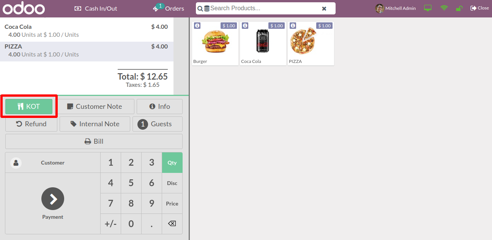

POS KOT PRINT
Most Advanced Open-Source POS Mangement Software
Overview
For restaurants, managing customer orders is done through a KOPS or Kitchen Order Print System. It helps restaurants manage, prioritise, alter, and track orders and substitutes paper order tickets. The KOT Print technique has also grown in popularity.
Key Features

Gives users the ability to use the KOT Button in the POS screen to view and print the orders that are currently being processed in the kitchen.
Provides a kitchen order print mechanism that can be used with any printer on the POS screen itself.
Screenshots
01
KOT Option for Point of Sale Screen Has Been Implemented
The order screen has a KOT option that can be used to print the order in the kitchen after the order has been taken.
02
KOT PRINT SCREEN
A preview of the KOT Order bill will be shown.
03
KOT Order Info
The bill will be generated in the kitchen once you click OK or Print To Kitchen.